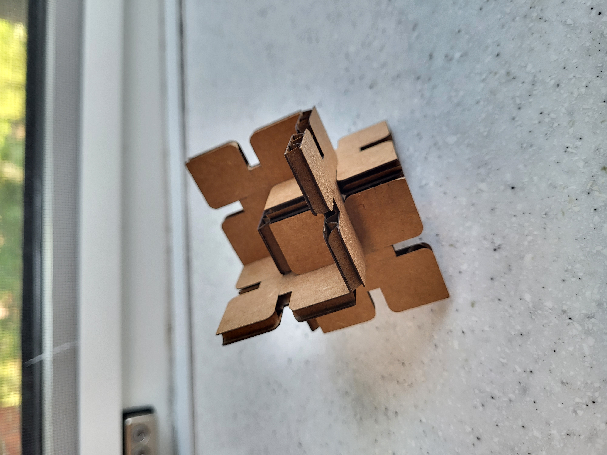
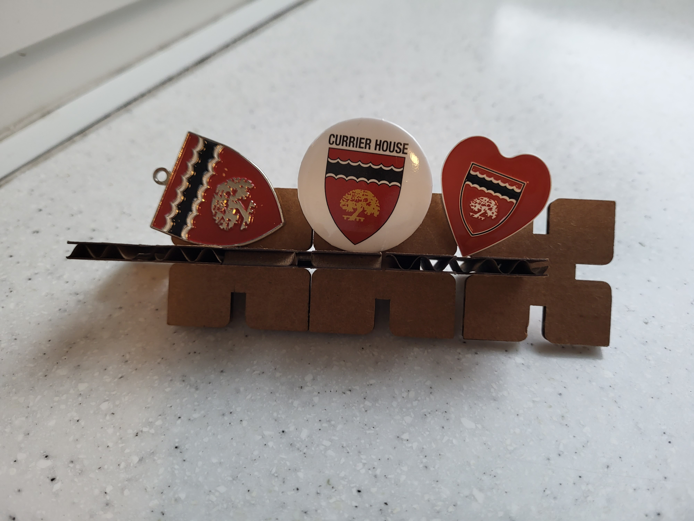
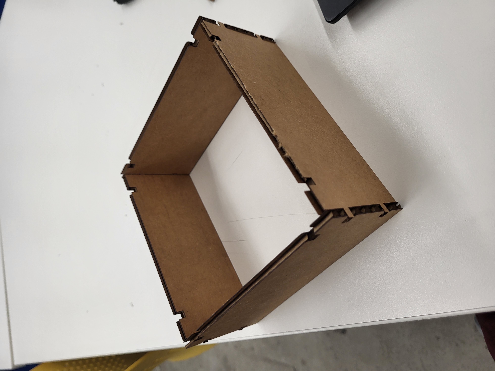
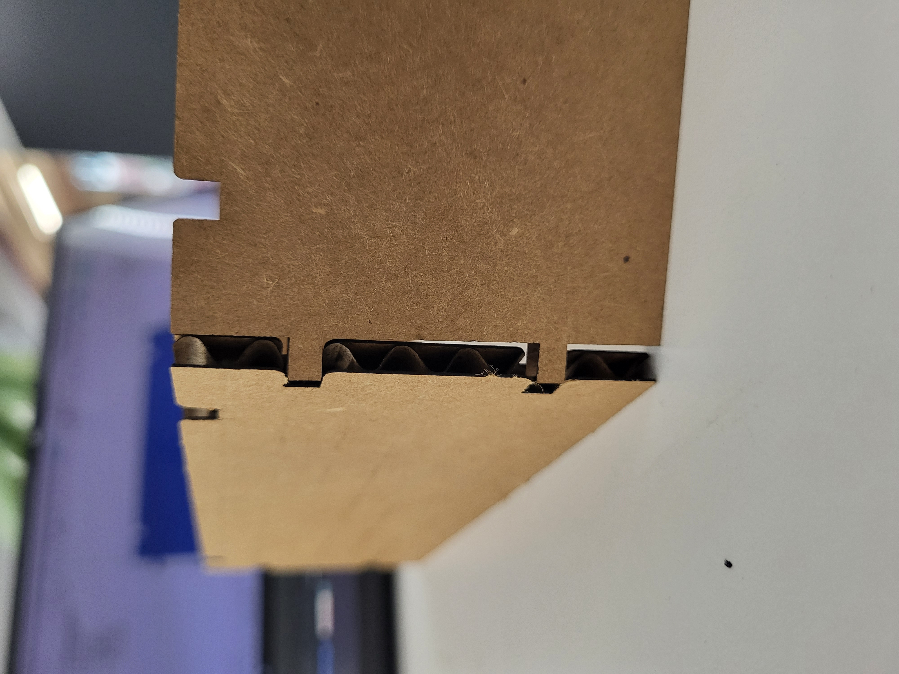
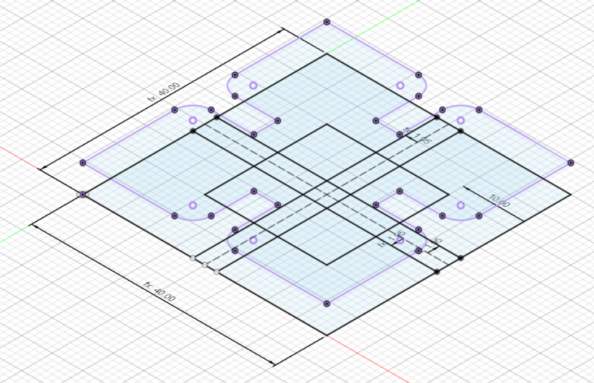
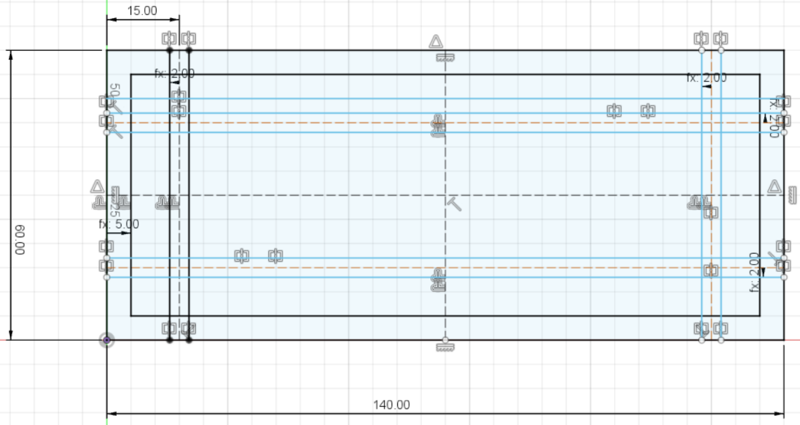

<br>
#### Week 2: 2D Design and Cutting
This week, I used Fusion 360 to model shapes that I laser cutted into cardboard!
I sketched shapes in 2D in Fusion, extruded them to 3D, and then converted the projection of that shape into a DXF file which I could then upload into the laser cutter program.
I used standard values of 4.6mm for cardboard thickness, 0.3mm for kerf, and various other lengths of the dimensions of the shapes I made.
Here's my first iteration with the modular design I made (I made it into a shelf/display for all my Currier trinkets):
<br>

<br>
<br>

I also used the laser cutter to try to make a little enclosure/box, seen here:
<br>

I actually made a mistake the first iteration of cutting the box because I forgot to account for kerf, so the pieces sticking out (inverse notches) were thinner than I wanted them to be.

I used the laser cutter on the following settings:
max_speed = 30
min_speed = 30
power = 80
<br>
And here's a few screenshots of my sketches in Fusion 360 of my modular shape (sketch with projection above) and my enclosure walls (sketch only).


Click [here](../index.html) to return to the homepage.